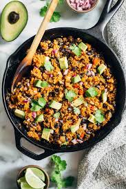

One Skillet Mexican Quinoa

Description
This One Skillet Mexican Quinoa is a quick, flavorful dish packed with protein-rich quinoa, black beans, corn, and zesty spices. It's perfect for a healthy weeknight dinner with minimal cleanup.
Ingredients
- 1 tablespoon olive oil
- 1 medium jalapeno pepper, chopped
- 2 cloves garlic, chopped
- 1 (15 ounce) can black beans, rinsed and drained
- 1 (14.5 ounce) can fire-roasted diced tomatoes
- 1 cup of yellow corn
- 1 cup quinoa
- 1 cup chicken broth
- 1 tablespoon red pepper flakes, or to taste
- 1 1/2 teaspoons chili powder
- 1/2 teaspoon ground cumin
- kosher salt and ground black pepper to taste
- 1 medium avocado - peeled, pitted, and diced
- 1 medium lime, juiced
- 2 tablespoons chopped fresh cilantro
Directions
- Heat oil in a large skillet over medium-high heat. Saute jalapeno pepper and and garlic in the hot oil until fragrant, about 1 minute.
- Stir black beans, tomatoes, corn, quinoa, and chicken broth into the skillet. Season with pepper flakes, chili powder, cumin, salt, and black pepper; bring to a boil.
- Cover the skillet with a lid, reduce heat to low, and simmer until quinoa is tender and liquid is mostly absorbed, about 20 minutes.
- Add avocado, lime juice and cilantro; stir until combined